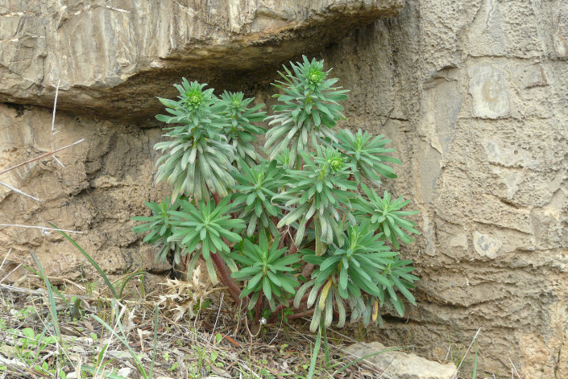
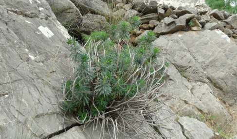
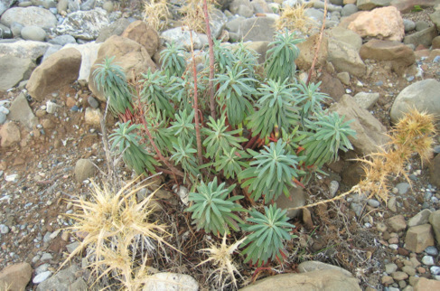
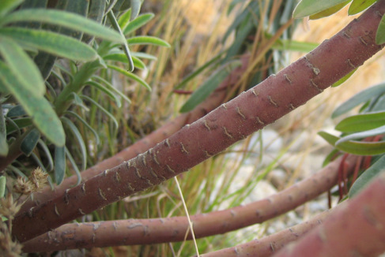
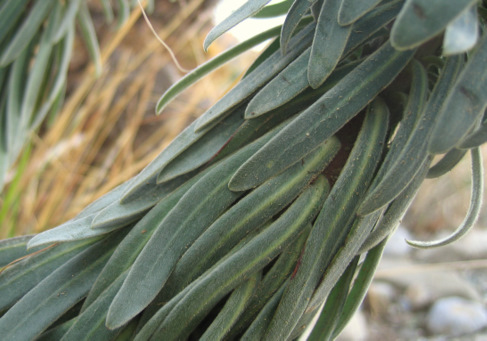
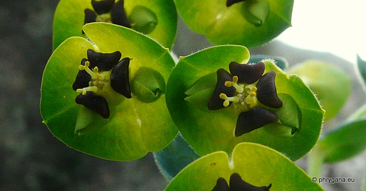

| PHRYGANA | Fauna | Flora | Galles | liste des espèces |
contact -
info - commentaires phrygana1 (at) gmail.com |
| Particularités crétoises | nouveautés | Mines | ressources naturelles |
| Euphorbia characias L. subsp. characias |
| 170 | Flora | EUPHORBIACEAE | Euphorbia L. |
|

Euphorbia characias subsp. characias Melambes (Agios Giorgos) 25 décembre 2009 |
| Large Mediterranean Spurge -- l'Euphorbe des garrigues -- Palisaden-Wolfsmilch -- Lechetrezna mayor -- Euforbia cespugliosa | |
| Plante poilue | |
| Feuilles: linéaires à lancéolées, bleuâtres à vert grisâtre, non dentées, alternes, serrées au sommet de la tige avant la floraison | |
| Tiges: robustes, nues et ligneuses à la base, rampantes-ascendantes, souvent de couleur rouge brun, non branchues; souche épaisse | |
| Fleurs: groupées en une ombelle (10 à 20 rayons), formant une tête arrondie à oblongue; bractées bleu verdâtre, circulaires - rectangulaires, jointes en coupe autour des fleurs; glandes brun rouge foncé (rarement jaunes) avec de courtes cornes | |
| Fruit: capsule (4 - 7 mm), tomenteuse; graines gris argenté, oblongues, caronculées | |
| Hauteur: 30 - 80 (-110) cm | Type biologique: chaméphyte frutescent |
| Floraison: novembre décembre janvier février mars | |
| Altitudes: 0 - 1300 m | |
| Statut en Crète: indigène, parfois cultivé dans les jardins | |
| Biotopes en Crète: rives de cours d'eau, phrygana, sols forestiers dégradés, terrains vagues, falaises, pierriers | |
| Distribution: région Méditerranéenne du Portugal à la Turquie (y compris les îles), Maroc, Libye | |
| Note: espèce héliophile; le suc est irritant. | |
| Note: la subsp. wulfenii est caractérisée par ses glandes jaunes et cornues, par une hauteur plus grande (jsqu'à 1.80 m), les feuilles un peu plus vert grisâtre, tiges vertes avec une distribution plus limitée, ne comprenant pas les Baléares ni l'Afrique du Nord, | |
|

 Euphorbia characias subsp. characias Melambes (Agios Giorgos) 25 décembre 2009 |
|

 Euphorbia characias subsp. characias Agia Galini 24 octobre 2007 |
|
 Euphorbia characias subsp. characias Melambes (Agios Giorgos) 20 février 2011 |
| 31 août 2012 |
| © paul fontaine -- © Phrygana.eu 2007 -- 2013 |